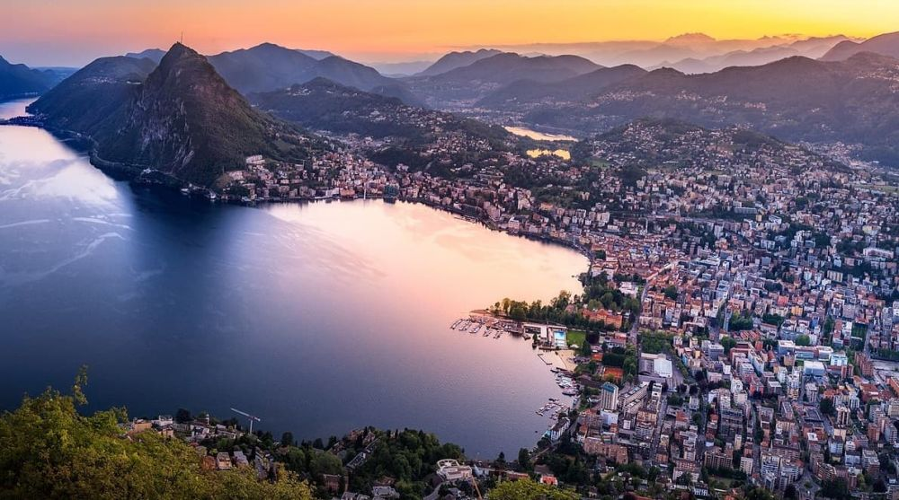

Descoperă Lugano - O călătorie în Elveția
Lugano este un oraș elegant situat pe malurile Lacului Lugano, oferind o varietate de atracții captivante pentru vizitatori:
-

Parcul Ciani din Lugano - Relaxare în natură
Bucurați-vă de frumusețea acestui parc magnific, plin de flori, alei și vederi pitorești asupra lacului.
-

Muntele Brè din Lugano - Priveliști panoramice
Urcați pe Muntele Brè pentru a admira panorama superbă a orașului și a lacului din vârful său.
-

Croazieră pe Lacul Lugano - Relaxare pe apă
Explorați frumusețea Lacului Lugano cu o croazieră și savurați priveliștile înconjurătoare.
-

Muntele San Salvatore din Lugano - Panorame de neuitat
Urcați pe Muntele San Salvatore cu funicularul și bucurați-vă de vederi impresionante asupra regiunii.
-

Moștenirea culturală din Lugano - Artă și cultură
Explorați muzee, galerii de artă și clădiri istorice care reflectă bogăția culturală a orașului.
Concluzii
Lugano oferă o combinație unică de frumusețe naturală, cultură și relaxare, făcându-l un oraș elvețian deosebit.